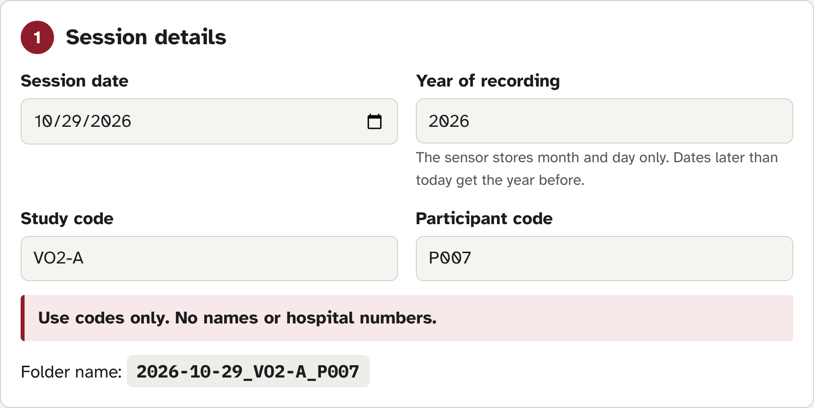
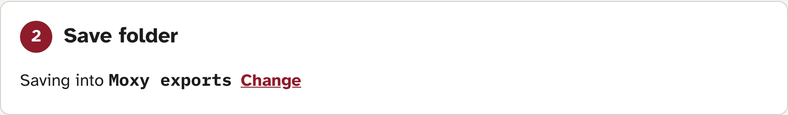
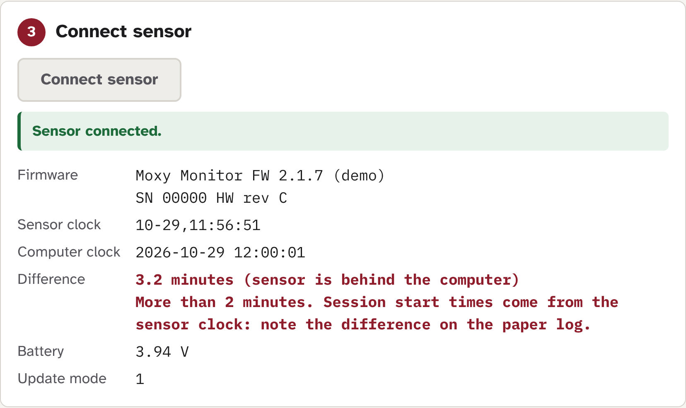
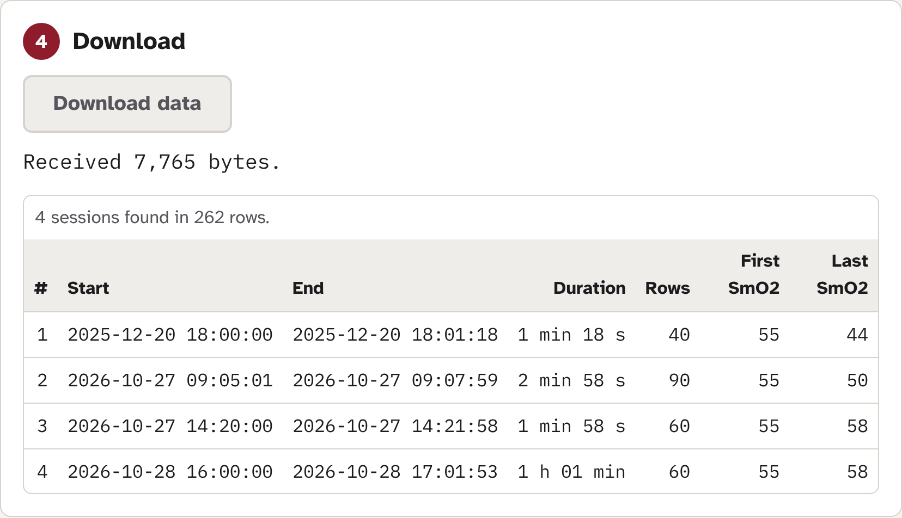
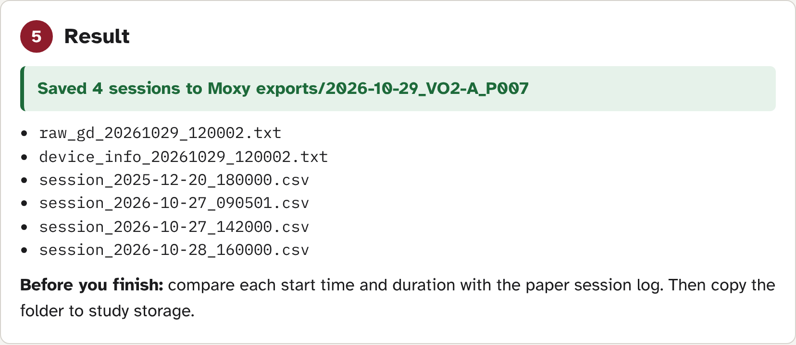
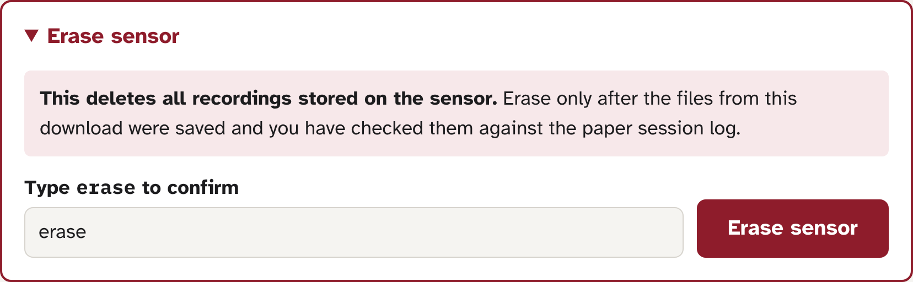
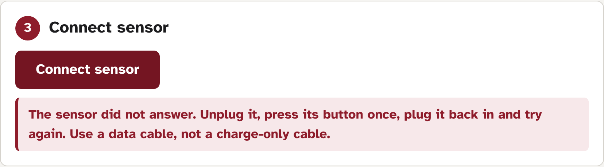
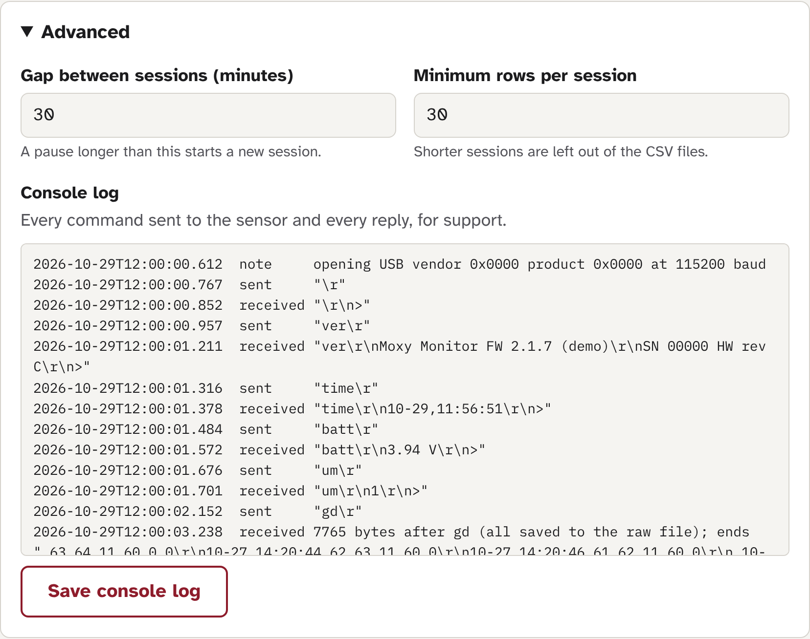

How to download the stored recordings from a USB Moxy muscle-oxygen sensor and save them as CSV files, using a web page in Google Chrome or Microsoft Edge. Written for research assistants and students. No programming or installation needed.
Open the app at
https://drmattchoo.github.io/moxy-web-export/
Only one program can talk to the sensor at a time. Close GoldenCheetah, the old Terminal script, and any virtual machine (for example Parallels or VirtualBox) before you start.
Study and participant codes may contain only letters, numbers and hyphens, for example VO2-A and P007. The app will not accept spaces or other characters. This keeps names out of folder names and files.
The sensor stores the month and day of each reading but not the year. The app adds the year you enter as Year of recording. If that gives a date later than today, the app uses the year before, so a December recording downloaded in January gets the right year.
The times in the files come from the sensor's own clock. The app shows that clock next to the computer's clock when you connect, so you can spot a sensor whose clock is wrong.
Practise once in demo mode (section 7). It uses a simulated sensor, so nothing can go wrong.
Open https://drmattchoo.github.io/moxy-web-export/ in Chrome or Edge. The page has five numbered steps, top to bottom. Each step is greyed out until the one before it is done.
Enter the session date, study code, participant code and year of recording (normally this year). The folder name appears underneath as you type. Check it is right.

The first time, click Choose save folder and pick the folder where exports should go (for example a Moxy exports folder on the desktop). The browser asks whether the page may save files there: click Allow or Save changes.
On later visits the page remembers the folder. If it shows Allow access, click it and allow again. To use a different folder, click Change.

After a few seconds the page shows the sensor's firmware, clock, battery and update mode.

If the sensor clock and the computer clock differ by more than 2 minutes, the line turns red. The session times in the files will be off by that amount. Write the difference on the paper session log, and tell whoever looks after the sensors so the clock can be reset.
Click Download data. A counter shows how many bytes have arrived. A full sensor can take a minute or two. Do not unplug the sensor or close the page while it runs.
When it finishes, a table lists every recording session found, with its start and end time, duration, number of rows and the first and last SmO2 values. The files are then saved automatically, and the sensor is released.

A green message says how many sessions were saved and where, followed by the list of files.

Now go to section 3 and check the files. To download the next participant, change the participant code in step 1 and connect again.
Each download creates a new folder named YYYY-MM-DD_STUDY_PARTICIPANT. The app never overwrites an existing folder or file.
| File | What it is |
|---|---|
| raw_gd_20261029_120001.txt | The exact data the sensor sent, untouched. Keep it: it is the original record. |
| device_info_20261029_120001.txt | Sensor firmware, clock, battery, update mode, app version and download time. |
| session_2026-10-27_090501.csv | One file per recording session, named by its start date and time. Opens in Excel, R, SPSS or Python. |
The number in the raw_gd and device_info names is the date and time of the download.
# Moxy Monitor FW 2.1.7 | SN 01234 HW rev C | moxy-web v1.0 # year assumed from --year / today's date; device log stores mm-dd only date,time,smo2_live,smo2_avg,thb,lap,extra 2026-10-27,09:05:01,55,52,12.40,0, 2026-10-27,09:05:03,56,53,12.39,0,
The two lines starting with # are notes, not data. When importing into Excel or a statistics program, skip the first 2 lines; the third line is the column header. Columns: SmO2 live and averaged (%), total haemoglobin (THb, g/dl), lap marker, and an extra column that is usually empty.
For every session in the table, check that the start time and duration match what was written on the paper session log (allowing for any clock difference you noted). Sessions from other participants or earlier tests may also be on the sensor; note which session belongs to this participant.
If a session is missing, or the times do not match, do not erase the sensor. Keep the folder and contact the maintainer (section 5).
Copy the whole folder, unchanged, to the study's secure storage location as set out in your study protocol. Do not rename files inside it or edit the CSV files; work on copies instead.
Erasing deletes all recordings on the sensor, for every participant. It cannot be undone. Only erase when your study protocol says so, and only after:
erase in the box. The Erase sensor button becomes active.
The erase button stays locked when:
Before erasing, the app also checks that the sensor plugged in is the one that was just downloaded. If not, it stops with “This is not the sensor that was just downloaded. Nothing was erased.”
Messages appear in a coloured box under the step where the problem happened.

Send: the export folder (if one was made), the saved console log (section 6), the computer type (Mac or Windows) and browser, and the exact message on screen.
| Message | What to do |
|---|---|
| Open this page in Google Chrome or Microsoft Edge on a computer. | You are in Safari, Firefox, or on a tablet or phone. Copy the address into Chrome or Edge on a Mac or Windows computer. |
| No sensor selected. Click Connect sensor and choose the Moxy. | The device list was closed without choosing. Click Connect sensor again. If the Moxy is not in the list, check the cable is plugged in and is a data cable. |
| The sensor is in use by another program. Close GoldenCheetah or any virtual machine, then try again. | Close GoldenCheetah, the Terminal script, other browser tabs with this page, and virtual machines. Then click Connect sensor again. |
| The sensor did not answer. Unplug it, press its button once, plug it back in and try again. Use a data cable, not a charge-only cable. | Do exactly that. If it happens again, try another USB cable and another USB port. |
| The sensor was unplugged. Plug it back in and click Connect sensor. | The cable came loose. If it happened during a download, whatever arrived was saved with a warning: do not erase. Reconnect and download again, adding -R2 to the participant code. |
| No complete recordings were found. The raw file was saved; send it to the maintainer. Do not erase the sensor. | The sensor sent data but no session was long enough. Send the folder and the console log (section 6) to the maintainer. Do not erase. |
| The download stopped before the sensor said it had finished. | The files were saved but may be incomplete. Do not erase. Connect and download again under a different participant code or date, for example add -R2 to the participant code. |
| A folder with this name already exists. Change the participant code or date. | This participant was already downloaded today. Check the existing folder. If you need a second download, change the participant code (for example P007-R2), then click Save files again or download again. |
| Allow access to the save folder again. | The browser forgot its permission. Click Allow access in step 2 (or Save files again in step 5) and allow. Your downloaded data is kept in the page until you close it. |
Click Advanced at the bottom of the page. Change these settings only if the study protocol or the maintainer tells you to.
| Setting | Meaning |
|---|---|
| Gap between sessions (default 30 minutes) | A pause in the data longer than this starts a new session file. |
| Minimum rows per session (default 30) | Sessions with fewer rows are treated as accidental and left out of the CSV files. They are still in the raw file. |
Change settings before clicking Download data.
The console log lists every command sent to the sensor and every reply, with the time. If something goes wrong, click Save console log: the browser saves a file named console_YYYYMMDD_HHMMSS.txt to your Downloads folder. Send it to the maintainer.

Demo mode replaces the sensor with a simulated one, so you can try every step without a Moxy. Open:
https://drmattchoo.github.io/moxy-web-export/?demo=1
An orange banner reads Demo mode: simulated sensor. Everything else works as normal: the simulated sensor has four sessions and a clock that is 3 minutes slow.
Demo mode writes real files. Choose a scratch folder (for example Demo test on the desktop), not the study export folder, and delete the demo files afterwards.
The whole app is a single web page. Once it has loaded, it no longer needs the internet; the sensor data never leaves the computer. Nothing is uploaded anywhere.
Print this page and keep it with the sensor.
erase, clicked Erase sensor, green message shown